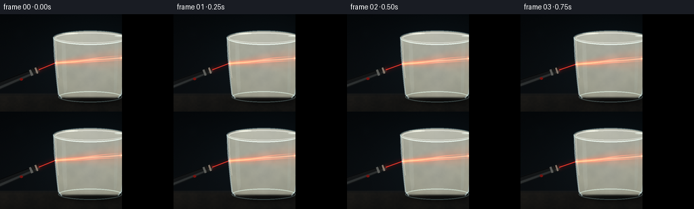
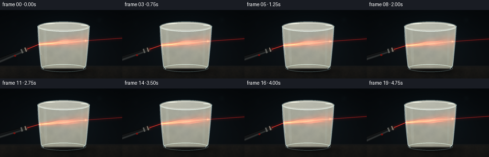
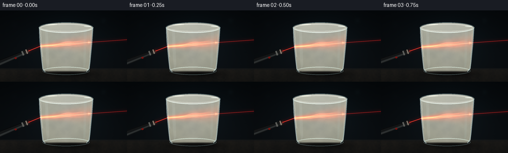
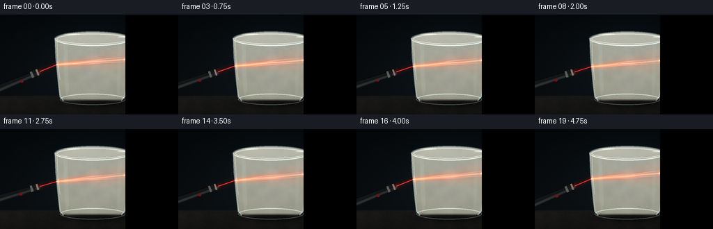
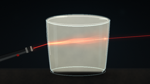

CODING AGENTS AS PIXEL WORLD MODELS
traex/GPT-5.6-Sol · phygen_046
点击播放 · 原生 RGB 像素
逐轮保存的候选
回放视频、检查图与代码变化。
每份候选均可单独播放。实际图片检查记录在下方工具轨迹中。
候选 01播放与检查图
点击播放 · 原生 RGB 像素


展开代码变化
--- 上一保存版本
+++ 本次保存版本
@@ -0,0 +1,265 @@
+from pathlib import Path
+import json, math
+import numpy as np
+from PIL import Image, ImageDraw, ImageFilter
+import artifact_io
+
+# Deterministic, supersampled procedural rendering of a laser scattering in milk.
+ROOT = Path(__file__).resolve().parent
+spec = json.loads((ROOT / "task_spec.json").read_text())
+W, H, N = spec["width"], spec["height"], spec["frames"]
+S = 3
+w, h = W*S, H*S
+Y, X = np.mgrid[0:h, 0:w].astype(np.float32)
+x, y = X/S, Y/S
+rng = np.random.default_rng(4601)
+
+def smooth_noise(seed, small=(24, 14), blur=0.0):
+ r = np.random.default_rng(seed)
+ a = (r.random((small[1], small[0]))*255).astype(np.uint8)
+ im = Image.fromarray(a).resize((w,h), Image.Resampling.BICUBIC)
+ if blur: im = im.filter(ImageFilter.GaussianBlur(blur*S))
+ return np.asarray(im, np.float32)/255.0
+
+def mask_image(draw_fn, blur=0):
+ im = Image.new("L", (w,h), 0)
+ d = ImageDraw.Draw(im)
+ draw_fn(d)
+ if blur: im = im.filter(ImageFilter.GaussianBlur(blur*S))
+ return np.asarray(im, np.float32)/255.0
+
+def comp(img, color, alpha):
+ if np.isscalar(alpha): alpha = np.full((h,w), alpha, np.float32)
+ a = np.clip(alpha,0,1)[...,None]
+ c = np.asarray(color, np.float32)
+ if c.ndim == 1: c = c[None,None,:]
+ return img*(1-a)+c*a
+
+def add(img, color, strength):
+ c=np.asarray(color,np.float32)[None,None,:]
+ return np.clip(img+c*strength[...,None],0,255)
+
+def line_distance(ax,ay,bx,by):
+ vx,vy=bx-ax,by-ay
+ q=np.clip(((x-ax)*vx+(y-ay)*vy)/(vx*vx+vy*vy+1e-6),0,1)
+ return np.sqrt((x-(ax+q*vx))**2+(y-(ay+q*vy))**2), q
+
+def polygon_mask(points, blur=0):
+ pts=[(int(px*S),int(py*S)) for px,py in points]
+ return mask_image(lambda d:d.polygon(pts,fill=255),blur)
+
+def ellipse_mask(box, blur=0, outline=None, width=1):
+ b=tuple(int(v*S) for v in box)
+ if outline is None:
+ return mask_image(lambda d:d.ellipse(b,fill=255),blur)
+ return mask_image(lambda d:d.ellipse(b,outline=255,width=max(1,int(width*S))),blur)
+
+# Reusable textures and geometry.
+cloud1=smooth_noise(100, (18,12))
+cloud2=smooth_noise(101, (39,22))
+fine=smooth_noise(102, (96,54))
+# Glass interior silhouette, surface, and lower curved volume.
+body_poly=[(79,34),(82,75),(86,118),(91,124),(174,124),(180,118),(184,72),(187,34)]
+body_mask=polygon_mask(body_poly,0.45)
+top_fill=ellipse_mask((79,25,187,45),0.35)
+bottom_fill=ellipse_mask((86,114,180,130),0.4)
+milk_mask=np.maximum(body_mask,top_fill)
+# trim liquid at the physical surface while preserving surface ellipse
+milk_mask*=np.clip((125-y)/4,0,1)
+
+# fixed suspended milk motes (positions sampled inside glass)
+prng=np.random.default_rng(884)
+particles=[]
+for _ in range(145):
+ px=prng.uniform(83,183)
+ edge=3+0.035*(px-133)**2
+ py=prng.uniform(36+edge*.06,119-edge*.05)
+ particles.append((px,py,prng.uniform(.18,.65),prng.uniform(0,2*np.pi),prng.uniform(.6,1.5)))
+
+frames=[]
+for fi in range(N):
+ t=fi/(N-1)
+ phase=2*np.pi*t
+ # Dark studio background with a faint cool pool behind the glass.
+ v=y/H
+ img=np.zeros((h,w,3),np.float32)
+ img[...,0]=7+8*v
+ img[...,1]=11+9*v
+ img[...,2]=14+10*v
+ cool=np.exp(-(((x-139)/96)**2+((y-66)/76)**2)*1.7)
+ img+=cool[...,None]*np.array([3,8,10],np.float32)
+ vig=np.clip(1-0.32*np.sqrt(((x-128)/145)**2+((y-70)/92)**2),.62,1)
+ img*=vig[...,None]
+ # Defocused highlights on the set.
+ bokeh=ellipse_mask((206,18,211,23),3.2)*0.16+ellipse_mask((26,26,31,31),4)*0.08
+ img=add(img,(45,80,82),bokeh)
+ # Table with soft sheen and fine wood/stone grain.
+ table=np.clip((y-116)/5,0,1)
+ table_col=np.empty_like(img)
+ table_col[...,0]=26-9*np.clip((y-116)/35,0,1)
+ table_col[...,1]=25-8*np.clip((y-116)/35,0,1)
+ table_col[...,2]=23-7*np.clip((y-116)/35,0,1)
+ grain=(np.sin(x*.21+np.sin(x*.035)*2)+np.sin(x*.061+1.4))*0.8+(fine-.5)*2
+ table_col+=grain[...,None]*np.array([1.5,1.1,.7])
+ img=img*(1-table[...,None])+table_col*table[...,None]
+ # contact line and glass cast shadow
+ img=add(img,(34,29,24),np.exp(-((y-118)/1.2)**2)*.18)
+ shadow=np.exp(-(((x-139)/67)**2+((y-128)/9)**2)*2.2)*np.clip((y-116)/6,0,1)
+ img*=1-.58*shadow[...,None]
+
+ # animated alignment of pointer and refracted ray
+ y_entry=73.2+2.15*np.sin(phase*.72-.55)+.45*np.sin(phase*2.0)
+ y_exit=64.8+1.55*np.sin(phase*.72-.32)+.28*np.sin(phase*2.0+.5)
+ pulse=.93+.07*np.sin(phase*1.35+.4)
+ tip=(57.0,82.2+.35*np.sin(phase*.72-.55))
+
+ # free-air laser before the glass: broad atmospheric bloom plus tight hot core
+ dl,ql=line_distance(tip[0],tip[1],81.2,y_entry)
+ segment=((x>=tip[0]-1)&(x<=82)).astype(np.float32)
+ img=add(img,(160,2,4),np.exp(-(dl/4.3)**2)*.15*pulse*segment)
+ img=add(img,(255,8,4),np.exp(-(dl/.62)**2)*.92*pulse*segment)
+ img=add(img,(255,156,91),np.exp(-(dl/.18)**2)*.78*pulse*segment)
+
+ # weak emergent beam behind the glass, bent slightly by refraction
+ dr,qr=line_distance(179.2,y_exit,266,y_exit-6.2)
+ rightseg=(x>=178).astype(np.float32)
+ img=add(img,(190,3,8),np.exp(-(dr/4.0)**2)*.10*pulse*rightseg)
+ img=add(img,(255,8,8),np.exp(-(dr/.55)**2)*.39*pulse*rightseg)
+ img=add(img,(255,110,75),np.exp(-(dr/.18)**2)*.38*pulse*rightseg)
+
+ # Dark pointer body aligned with its beam; layered metallic facets.
+ dx,dy=81.2-tip[0],y_entry-tip[1]
+ L=math.hypot(dx,dy); ux,uy=dx/L,dy/L; nx,ny=-uy,ux
+ rear=(tip[0]-70*ux,tip[1]-70*uy)
+ def quad(a,b,wa,wb):
+ return [(a[0]+nx*wa,a[1]+ny*wa),(b[0]+nx*wb,b[1]+ny*wb),
+ (b[0]-nx*wb,b[1]-ny*wb),(a[0]-nx*wa,a[1]-ny*wa)]
+ pm=polygon_mask(quad(rear,tip,5.6,4.0),.35)
+ img=comp(img,(19,21,22),pm)
+ # lower and upper specular facets
+ facet=polygon_mask([(rear[0]+nx*1.1,rear[1]+ny*1.1),(tip[0]+nx*.7,tip[1]+ny*.7),
+ (tip[0]+nx*3.1,tip[1]+ny*3.1),(rear[0]+nx*4.4,rear[1]+ny*4.4)],.2)
+ img=comp(img,(54,58,58),facet*.72)
+ edge=polygon_mask([(rear[0]-nx*4.5,rear[1]-ny*4.5),(tip[0]-nx*3.1,tip[1]-ny*3.1),
+ (tip[0]-nx*4,tip[1]-ny*4),(rear[0]-nx*5.5,rear[1]-ny*5.5)],.15)
+ img=comp(img,(4,5,6),edge*.9)
+ # metallic rings near emitter
+ for off,col,ww in [(-12,(98,99,95),1.5),(-8,(23,24,23),1.3),(-3.5,(135,126,113),1.15)]:
+ cx,cy=tip[0]+off*ux,tip[1]+off*uy
+ rm=polygon_mask([(cx+nx*4.6-ux*ww,cy+ny*4.6-uy*ww),(cx+nx*4.6+ux*ww,cy+ny*4.6+uy*ww),
+ (cx-nx*4.6+ux*ww,cy-ny*4.6+uy*ww),(cx-nx*4.6-ux*ww,cy-ny*4.6-uy*ww)],.12)
+ img=comp(img,col,rm*.92)
+ # red button on pointer
+ bx,by=tip[0]-29*ux+3.5*nx,tip[1]-29*uy+3.5*ny
+ button=ellipse_mask((bx-2.3,by-1.8,bx+2.3,by+1.8),.2)
+ img=comp(img,(118,18,15),button)
+ img=add(img,(255,45,22),ellipse_mask((tip[0]-2.2,tip[1]-2.2,tip[0]+2.2,tip[1]+2.2),2.2)*.3*pulse)
+
+ # Milk volume: warm thick fluid, cloudy depth and edge falloff.
+ base=np.empty_like(img)
+ depth=np.clip((y-31)/96,0,1)
+ edge_x=np.clip(np.abs(x-133)/56,0,1)
+ mott=(cloud1-.5)*8+(cloud2-.5)*5+(fine-.5)*2.2
+ base[...,0]=204-17*depth-19*edge_x+mott
+ base[...,1]=204-18*depth-18*edge_x+mott*.92
+ base[...,2]=190-22*depth-20*edge_x+mott*.68
+ # gentle transmitted background at rim, opaque center
+ opacity=np.clip(.92-.10*np.exp(-((x-133)/47)**2),.78,.94)*milk_mask
+ img=img*(1-opacity[...,None])+base*opacity[...,None]
+
+ # Surface ellipse - creamy meniscus and central soft reflection.
+ surf=ellipse_mask((80,25.8,186,45.2),.3)*milk_mask
+ surf_col=np.zeros_like(img)
+ surf_col[...,0]=208+18*np.exp(-((x-122)/38)**2)
+ surf_col[...,1]=210+16*np.exp(-((x-122)/38)**2)
+ surf_col[...,2]=198+11*np.exp(-((x-122)/38)**2)
+ img=img*(1-(surf*.29)[...,None])+surf_col*(surf*.29)[...,None]
+ men=ellipse_mask((81,27,185,44),.35,outline=True,width=.65)
+ img=add(img,(211,224,217),men*.24)
+
+ # Volumetric Tyndall scattering inside the milk.
+ u=np.clip((x-81)/99,0,1)
+ center=y_entry+(y_exit-y_entry)*u + .42*np.sin(u*8.5+phase*.55)*(np.sin(np.pi*u)**2)
+ dist=np.abs(y-center)
+ sigma=1.8+7.8*u
+ atten=np.exp(-1.28*u)
+ broad=np.exp(-.5*(dist/sigma)**2)*atten*milk_mask*pulse
+ # Turbulence causes intricate banded density within the cone.
+ bands=.74+.26*np.sin(dist*2.15 + x*.29 + np.sin(x*.095+phase)*1.7)
+ halo=broad*(.72+.28*bands)
+ # Colorize rather than merely brighten, preserving the opaque milk texture.
+ img[...,0]=np.clip(img[...,0]+82*halo,0,255)
+ img[...,1]=np.clip(img[...,1]-28*halo+10*broad,0,255)
+ img[...,2]=np.clip(img[...,2]-38*halo+3*broad,0,255)
+
+ # Central concentrated beam and curved filamentary scattering paths.
+ core=np.exp(-.5*(dist/(.48+.33*u))**2)*np.exp(-.72*u)*milk_mask*pulse
+ img=add(img,(98,38,20),core*.90)
+ img=add(img,(255,146,88),core*.26)
+ filament_total=np.zeros((h,w),np.float32)
+ for k in [-3,-2,-1,1,2,3]:
+ fan=k*(.35+1.33*u)+math.sin(k*1.7)*u*1.5
+ curve=.75*np.sin(u*(7.5+abs(k)*.8)+phase*.7+k*1.2)*np.sin(np.pi*u)
+ path=center+fan+curve
+ fd=np.abs(y-path)
+ fil=np.exp(-.5*(fd/(.23+.07*abs(k)))**2)*np.exp(-1.05*u)*np.sin(np.pi*u)**.45
+ filament_total+=fil
+ filament_total*=milk_mask*pulse
+ img=add(img,(92,18,6),np.clip(filament_total,0,1)*.47)
+ img=add(img,(255,80,32),np.clip(filament_total,0,1)*.10)
+
+ # Minute suspended particles flare as the moving beam crosses them.
+ spark_layer=Image.new("RGBA",(w,h),(0,0,0,0)); sd=ImageDraw.Draw(spark_layer)
+ for j,(px,py,rad,ph,lev) in enumerate(particles):
+ uu=np.clip((px-81)/99,0,1)
+ cy=y_entry+(y_exit-y_entry)*uu+.42*math.sin(uu*8.5+phase*.55)*(math.sin(math.pi*uu)**2)
+ sig=2.0+8.0*uu
+ illum=math.exp(-.5*((py-cy)/sig)**2)*math.exp(-1.25*uu)
+ tw=.66+.34*math.sin(phase*(1.1+0.08*(j%5))+ph)**2
+ a=int(np.clip(illum*tw*145*lev,0,190))
+ if a>3:
+ rr=rad*S
+ sd.ellipse((px*S-rr,py*S-rr,px*S+rr,py*S+rr),fill=(255,154,105,a))
+ sparks=np.asarray(spark_layer,np.float32)
+ sa=sparks[...,3]/255*milk_mask
+ img=img*(1-sa[...,None])+sparks[...,:3]*sa[...,None]
+
+ # Bright entry/exit interaction spots on the curved walls.
+ for cx,cy,strength,size in [(81.6,y_entry,1.0,2.9),(179.2,y_exit,.44,2.4)]:
+ spot=np.exp(-(((x-cx)/size)**2+((y-cy)/(size*1.35))**2))*milk_mask
+ img=add(img,(255,57,26),spot*.50*strength*pulse)
+ img=add(img,(255,224,179),np.exp(-(((x-cx)/.62)**2+((y-cy)/.8)**2))*strength*pulse)
+
+ # Glass optical overlays: edge shadows, cyan/white highlights and base refraction.
+ outer_edge=ellipse_mask((78,24,188,45),.25,outline=True,width=1.05)
+ img=add(img,(139,175,178),outer_edge*.48)
+ inner_rim=ellipse_mask((82,28,184,42),.18,outline=True,width=.52)
+ img=add(img,(232,238,222),inner_rim*.55)
+ # left and right curved side walls drawn as anti-aliased lines
+ overlay=Image.new("RGBA",(w,h),(0,0,0,0)); od=ImageDraw.Draw(overlay)
+ def pts(seq): return [(int(a*S),int(b*S)) for a,b in seq]
+ od.line(pts([(79,34),(80,61),(84,102),(86,118),(91,124)]),fill=(211,235,236,125),width=2*S,joint="curve")
+ od.line(pts([(187,34),(185,65),(181,105),(179,118),(174,124)]),fill=(195,225,227,118),width=2*S,joint="curve")
+ od.line(pts([(82,38),(83,69),(86,94)]),fill=(255,255,246,82),width=1*S)
+ od.line(pts([(184,39),(182,73),(180,95)]),fill=(255,255,250,52),width=1*S)
+ # broad vertical window glints
+ od.polygon(pts([(91,37),(96,38),(99,111),(95,119),(92,91)]),fill=(238,251,248,18))
+ od.polygon(pts([(169,38),(175,37),(172,111),(168,118)]),fill=(199,233,235,15))
+ ov=np.asarray(overlay,np.float32); oa=ov[...,3]/255
+ img=img*(1-oa[...,None])+ov[...,:3]*oa[...,None]
+ baseedge=ellipse_mask((86,114,180,130),.3,outline=True,width=1.15)
+ img=add(img,(152,190,191),baseedge*.44)
+ img*=1-(ellipse_mask((91,120,176,128),1.2)*.11)[...,None]
+ img=add(img,(234,243,226),ellipse_mask((96,121,171,126),.8,outline=True,width=.45)*.22)
+ # pin highlights on rim
+ img=add(img,(255,255,246),ellipse_mask((91,27.5,115,29.2),.45)*.18)
+ img=add(img,(205,236,239),ellipse_mask((169,31,184,33),.5)*.19)
+
+ # mild sensor grain and final high-quality downsample
+ sensor=np.random.default_rng(9000+fi).normal(0,.42,(h,w,1)).astype(np.float32)
+ img=np.clip(img+sensor,0,255).astype(np.uint8)
+ final=Image.fromarray(img,"RGB").resize((W,H),Image.Resampling.LANCZOS)
+ frames.append(np.asarray(final,dtype=np.uint8))
+
+frames=np.stack(frames,axis=0)
+artifact_io.save(frames, ROOT)
候选 02播放与检查图
点击播放 · 原生 RGB 像素


展开代码变化
--- 上一保存版本
+++ 本次保存版本
@@ -188,9 +188,13 @@
bands=.74+.26*np.sin(dist*2.15 + x*.29 + np.sin(x*.095+phase)*1.7)
halo=broad*(.72+.28*bands)
# Colorize rather than merely brighten, preserving the opaque milk texture.
- img[...,0]=np.clip(img[...,0]+82*halo,0,255)
- img[...,1]=np.clip(img[...,1]-28*halo+10*broad,0,255)
- img[...,2]=np.clip(img[...,2]-38*halo+3*broad,0,255)
+ img[...,0]=np.clip(img[...,0]+105*halo,0,255)
+ img[...,1]=np.clip(img[...,1]-33*halo+13*broad,0,255)
+ img[...,2]=np.clip(img[...,2]-43*halo+4*broad,0,255)
+ # A soft peach-to-crimson aureole makes the path in the colloid distinct
+ # from the razor-thin ray in air.
+ warm_shell=np.exp(-.5*(dist/(3.0+8.5*u))**2)*np.exp(-1.0*u)*milk_mask
+ img=add(img,(48,5,1),warm_shell*.34*pulse)
# Central concentrated beam and curved filamentary scattering paths.
core=np.exp(-.5*(dist/(.48+.33*u))**2)*np.exp(-.72*u)*milk_mask*pulse
@@ -202,11 +206,29 @@
curve=.75*np.sin(u*(7.5+abs(k)*.8)+phase*.7+k*1.2)*np.sin(np.pi*u)
path=center+fan+curve
fd=np.abs(y-path)
- fil=np.exp(-.5*(fd/(.23+.07*abs(k)))**2)*np.exp(-1.05*u)*np.sin(np.pi*u)**.45
+ aperture=np.clip(np.sin(np.pi*u),0,1)**.45
+ fil=np.exp(-.5*(fd/(.23+.07*abs(k)))**2)*np.exp(-1.05*u)*aperture
filament_total+=fil
filament_total*=milk_mask*pulse
img=add(img,(92,18,6),np.clip(filament_total,0,1)*.47)
img=add(img,(255,80,32),np.clip(filament_total,0,1)*.10)
+
+ # Longer, very fine multiple-scattering tendrils. They gently ripple as
+ # suspended fat globules drift, giving life without moving the glass.
+ tendrils=np.zeros((h,w),np.float32)
+ for k in range(-4,5):
+ if k == 0: continue
+ spread=k*(.25+1.55*u**1.28)
+ wave=(.45+.10*abs(k))*np.sin(u*(11.0+abs(k))+phase*.48+k*.83)*np.sin(np.pi*u)
+ path=center+spread+wave
+ tendrils += np.exp(-.5*((y-path)/(.19+.035*abs(k)))**2)*np.exp(-1.15*u)
+ tendrils*=milk_mask*np.clip(np.sin(np.pi*u),0,1)**.58
+ img=add(img,(255,37,15),np.clip(tendrils,0,1)*.29*pulse)
+ img=add(img,(255,177,113),np.clip(tendrils,0,1)*.105*pulse)
+ # Extremely faint cool lower fringe, a plausible color-contrast effect in
+ # dense white milk rather than a second beam.
+ cool_fringe=np.exp(-.5*((y-(center+sigma*.88))/(1.4+2.0*u))**2)*np.exp(-1.8*u)*milk_mask
+ img=add(img,(20,35,40),cool_fringe*.10)
# Minute suspended particles flare as the moving beam crosses them.
spark_layer=Image.new("RGBA",(w,h),(0,0,0,0)); sd=ImageDraw.Draw(spark_layer)
@@ -258,7 +280,7 @@
# mild sensor grain and final high-quality downsample
sensor=np.random.default_rng(9000+fi).normal(0,.42,(h,w,1)).astype(np.float32)
img=np.clip(img+sensor,0,255).astype(np.uint8)
- final=Image.fromarray(img,"RGB").resize((W,H),Image.Resampling.LANCZOS)
+ final=Image.fromarray(img).resize((W,H),Image.Resampling.LANCZOS)
frames.append(np.asarray(final,dtype=np.uint8))
frames=np.stack(frames,axis=0)
可观测工具轨迹
实际执行的命令与返回图片。
命令 1exit 0
/bin/bash -lc "cat prompt.txt && printf '\\n--- RULES ---\\n' && cat GENERATION_RULES.md && printf '\\n--- SPEC ---\\n' && cat task_spec.json"
命令 2exit 0
/bin/bash -lc "find . -maxdepth 2 -type f -printf '%p\\n' | sort | head -200 && printf '\\nTOOLS\\n' && command -v ffmpeg && command -v python3 && command -v blender || true"
命令 3exit 0
/bin/bash -lc 'cat artifact_io.py'
命令 4exit 0
/bin/bash -lc "cat > generate.py <<'PY'
from pathlib import Path
import json, math
import numpy as np
from PIL import Image, ImageDraw, ImageFilter
import artifact_io
# Deterministic, supersampled procedural rendering of a laser scattering in milk.
ROOT = Path(__file__).resolve().parent
spec = json.loads((ROOT / \"task_spec.json\").read_text())
W, H, N = spec[\"width\"], spec[\"height\"], spec[\"frames\"]
S = 3
w, h = W*S, H*S
Y, X = np.mgrid[0:h, 0:w].astype(np.float32)
x, y = X/S, Y/S
rng = np.random.default_rng(4601)
def smooth_noise(seed, small=(24, 14), blur=0.0):
r = np.random.default_rng(seed)
a = (r.random((small[1], small[0]))*255).astype(np.uint8)
im = Image.fromarray(a).resize((w,h), Image.Resampling.BICUBIC)
if blur: im = im.filter(ImageFilter.GaussianBlur(blur*S))
return np.asarray(im, np.float32)/255.0
def mask_image(draw_fn, blur=0):
im = Image.new(\"L\", (w,h), 0)
d = ImageDraw.Draw(im)
draw_fn(d)
if blur: im = im.filter(ImageFilter.GaussianBlur(blur*S))
return np.asarray(im, np.float32)/255.0
def comp(img, color, alpha):
if np.isscalar(alpha): alpha = np.full((h,w), alpha, np.float32)
a = np.clip(alpha,0,1)[...,None]
c = np.asarray(color, np.float32)
if c.ndim == 1: c = c[None,None,:]
return img*(1-a)+c*a
def add(img, color, strength):
c=np.asarray(color,np.float32)[None,None,:]
return np.clip(img+c*strength[...,None],0,255)
def line_distance(ax,ay,bx,by):
vx,vy=bx-ax,by-ay
q=np.clip(((x-ax)*vx+(y-ay)*vy)/(vx*vx+vy*vy+1e-6),0,1)
return np.sqrt((x-(ax+q*vx))**2+(y-(ay+q*vy))**2), q
def polygon_mask(points, blur=0):
pts=[(int(px*S),int(py*S)) for px,py in points]
return mask_image(lambda d:d.polygon(pts,fill=255),blur)
def ellipse_mask(box, blur=0, outline=None, width=1):
b=tuple(int(v*S) for v in box)
if outline is None:
return mask_image(lambda d:d.ellipse(b,fill=255),blur)
return mask_image(lambda d:d.ellipse(b,outline=255,width=max(1,int(width*S))),blur)
# Reusable textures and geometry.
cloud1=smooth_noise(100, (18,12))
cloud2=smooth_noise(101, (39,22))
fine=smooth_noise(102, (96,54))
# Glass interior silhouette, surface, and lower curved volume.
body_poly=[(79,34),(82,75),(86,118),(91,124),(174,124),(180,118),(184,72),(187,34)]
body_mask=polygon_mask(body_poly,0.45)
top_fill=ellipse_mask((79,25,187,45),0.35)
bottom_fill=ellipse_mask((86,114,180,130),0.4)
milk_mask=np.maximum(body_mask,top_fill)
# trim liquid at the physical surface while preserving surface ellipse
milk_mask*=np.clip((125-y)/4,0,1)
# fixed suspended milk motes (positions sampled inside glass)
prng=np.random.default_rng(884)
particles=[]
for _ in range(145):
px=prng.uniform(83,183)
edge=3+0.035*(px-133)**2
py=prng.uniform(36+edge*.06,119-edge*.05)
particles.append((px,py,prng.uniform(.18,.65),prng.uniform(0,2*np.pi),prng.uniform(.6,1.5)))
frames=[]
for fi in range(N):
t=fi/(N-1)
phase=2*np.pi*t
# Dark studio background with a faint cool pool behind the glass.
v=y/H
img=np.zeros((h,w,3),np.float32)
img[...,0]=7+8*v
img[...,1]=11+9*v
img[...,2]=14+10*v
cool=np.exp(-(((x-139)/96)**2+((y-66)/76)**2)*1.7)
img+=cool[...,None]*np.array([3,8,10],np.float32)
vig=np.clip(1-0.32*np.sqrt(((x-128)/145)**2+((y-70)/92)**2),.62,1)
img*=vig[...,None]
# Defocused highlights on the set.
bokeh=ellipse_mask((206,18,211,23),3.2)*0.16+ellipse_mask((26,26,31,31),4)*0.08
img=add(img,(45,80,82),bokeh)
# Table with soft sheen and fine wood/stone grain.
table=np.clip((y-116)/5,0,1)
table_col=np.empty_like(img)
table_col[...,0]=26-9*np.clip((y-116)/35,0,1)
table_col[...,1]=25-8*np.clip((y-116)/35,0,1)
table_col[...,2]=23-7*np.clip((y-116)/35,0,1)
grain=(np.sin(x*.21+np.sin(x*.035)*2)+np.sin(x*.061+1.4))*0.8+(fine-.5)*2
table_col+=grain[...,None]*np.array([1.5,1.1,.7])
img=img*(1-table[...,None])+table_col*table[...,None]
# contact line and glass cast shadow
img=add(img,(34,29,24),np.exp(-((y-118)/1.2)**2)*.18)
shadow=np.exp(-(((x-139)/67)**2+((y-128)/9)**2)*2.2)*np.clip((y-116)/6,0,1)
img*=1-.58*shadow[...,None]
# animated alignment of pointer and refracted ray
y_entry=73.2+2.15*np.sin(phase*.72-.55)+.45*np.sin(phase*2.0)
y_exit=64.8+1.55*np.sin(phase*.72-.32)+.28*np.sin(phase*2.0+.5)
pulse=.93+.07*np.sin(phase*1.35+.4)
tip=(57.0,82.2+.35*np.sin(phase*.72-.55))
# free-air laser before the glass: broad atmospheric bloom plus tight hot core
dl,ql=line_distance(tip[0],tip[1],81.2,y_entry)
segment=((x>=tip[0]-1)&(x<=82)).astype(np.float32)
img=add(img,(160,2,4),np.exp(-(dl/4.3)**2)*.15*pulse*segment)
img=add(img,(255,8,4),np.exp(-(dl/.62)**2)*.92*pulse*segment)
img=add(img,(255,156,91),np.exp(-(dl/.18)**2)*.78*pulse*segment)
# weak emergent beam behind the glass, bent slightly by refraction
dr,qr=line_distance(179.2,y_exit,266,y_exit-6.2)
rightseg=(x>=178).astype(np.float32)
img=add(img,(190,3,8),np.exp(-(dr/4.0)**2)*.10*pulse*rightseg)
img=add(img,(255,8,8),np.exp(-(dr/.55)**2)*.39*pulse*rightseg)
img=add(img,(255,110,75),np.exp(-(dr/.18)**2)*.38*pulse*rightseg)
# Dark pointer body aligned with its beam; layered metallic facets.
dx,dy=81.2-tip[0],y_entry-tip[1]
L=math.hypot(dx,dy); ux,uy=dx/L,dy/L; nx,ny=-uy,ux
rear=(tip[0]-70*ux,tip[1]-70*uy)
def quad(a,b,wa,wb):
return [(a[0]+nx*wa,a[1]+ny*wa),(b[0]+nx*wb,b[1]+ny*wb),
(b[0]-nx*wb,b[1]-ny*wb),(a[0]-nx*wa,a[1]-ny*wa)]
pm=polygon_mask(quad(rear,tip,5.6,4.0),.35)
img=comp(img,(19,21,22),pm)
# lower and upper specular facets
facet=polygon_mask([(rear[0]+nx*1.1,rear[1]+ny*1.1),(tip[0]+nx*.7,tip[1]+ny*.7),
(tip[0]+nx*3.1,tip[1]+ny*3.1),(rear[0]+nx*4.4,rear[1]+ny*4.4)],.2)
img=comp(img,(54,58,58),facet*.72)
edge=polygon_mask([(rear[0]-nx*4.5,rear[1]-ny*4.5),(tip[0]-nx*3.1,tip[1]-ny*3.1),
(tip[0]-nx*4,tip[1]-ny*4),(rear[0]-nx*5.5,rear[1]-ny*5.5)],.15)
img=comp(img,(4,5,6),edge*.9)
# metallic rings near emitter
for off,col,ww in [(-12,(98,99,95),1.5),(-8,(23,24,23),1.3),(-3.5,(135,126,113),1.15)]:
cx,cy=tip[0]+off*ux,tip[1]+off*uy
rm=polygon_mask([(cx+nx*4.6-ux*ww,cy+ny*4.6-uy*ww),(cx+nx*4.6+ux*ww,cy+ny*4.6+uy*ww),
(cx-nx*4.6+ux*ww,cy-ny*4.6+uy*ww),(cx-nx*4.6-ux*ww,cy-ny*4.6-uy*ww)],.12)
img=comp(img,col,rm*.92)
# red button on pointer
bx,by=tip[0]-29*ux+3.5*nx,tip[1]-29*uy+3.5*ny
button=ellipse_mask((bx-2.3,by-1.8,bx+2.3,by+1.8),.2)
img=comp(img,(118,18,15),button)
img=add(img,(255,45,22),ellipse_mask((tip[0]-2.2,tip[1]-2.2,tip[0]+2.2,tip[1]+2.2),2.2)*.3*pulse)
# Milk volume: warm thick fluid, cloudy depth and edge falloff.
base=np.empty_like(img)
depth=np.clip((y-31)/96,0,1)
edge_x=np.clip(np.abs(x-133)/56,0,1)
mott=(cloud1-.5)*8+(cloud2-.5)*5+(fine-.5)*2.2
base[...,0]=204-17*depth-19*edge_x+mott
base[...,1]=204-18*depth-18*edge_x+mott*.92
base[...,2]=190-22*depth-20*edge_x+mott*.68
# gentle transmitted background at rim, opaque center
opacity=np.clip(.92-.10*np.exp(-((x-133)/47)**2),.78,.94)*milk_mask
img=img*(1-opacity[...,None])+base*opacity[...,None]
# Surface ellipse - creamy meniscus and central soft reflection.
surf=ellipse_mask((80,25.8,186,45.2),.3)*milk_mask
surf_col=np.zeros_like(img)
surf_col[...,0]=208+18*np.exp(-((x-122)/38)**2)
surf_col[...,1]=210+16*np.exp(-((x-122)/38)**2)
surf_col[...,2]=198+11*np.exp(-((x-122)/38)**2)
img=img*(1-(surf*.29)[...,None])+surf_col*(surf*.29)[...,None]
men=ellipse_mask((81,27,185,44),.35,outline=True,width=.65)
img=add(img,(211,224,217),men*.24)
# Volumetric Tyndall scattering inside the milk.
u=np.clip((x-81)/99,0,1)
center=y_entry+(y_exit-y_entry)*u + .42*np.sin(u*8.5+phase*.55)*(np.sin(np.pi*u)**2)
dist=np.abs(y-center)
sigma=1.8+7.8*u
atten=np.exp(-1.28*u)
broad=np.exp(-.5*(dist/sigma)**2)*atten*milk_mask*pulse
# Turbulence causes intricate banded density within the cone.
bands=.74+.26*np.sin(dist*2.15 + x*.29 + np.sin(x*.095+phase)*1.7)
halo=broad*(.72+.28*bands)
# Colorize rather than merely brighten, preserving the opaque milk texture.
img[...,0]=np.clip(img[...,0]+82*halo,0,255)
img[...,1]=np.clip(img[...,1]-28*halo+10*broad,0,255)
img[...,2]=np.clip(img[...,2]-38*halo+3*broad,0,255)
# Central concentrated beam and curved filamentary scattering paths.
core=np.exp(-.5*(dist/(.48+.33*u))**2)*np.exp(-.72*u)*milk_mask*pulse
img=add(img,(98,38,20),core*.90)
img=add(img,(255,146,88),core*.26)
filament_total=np.zeros((h,w),np.float32)
for k in [-3,-2,-1,1,2,3]:
fan=k*(.35+1.33*u)+math.sin(k*1.7)*u*1.5
curve=.75*np.sin(u*(7.5+abs(k)*.8)+phase*.7+k*1.2)*np.sin(np.pi*u)
path=center+fan+curve
fd=np.abs(y-path)
fil=np.exp(-.5*(fd/(.23+.07*abs(k)))**2)*np.exp(-1.05*u)*np.sin(np.pi*u)**.45
filament_total+=fil
filament_total*=milk_mask*pulse
img=add(img,(92,18,6),np.clip(filament_total,0,1)*.47)
img=add(img,(255,80,32),np.clip(filament_total,0,1)*.10)
# Minute suspended particles flare as the moving beam crosses them.
spark_layer=Image.new(\"RGBA\",(w,h),(0,0,0,0)); sd=ImageDraw.Draw(spark_layer)
for j,(px,py,rad,ph,lev) in enumerate(particles):
uu=np.clip((px-81)/99,0,1)
cy=y_entry+(y_exit-y_entry)*uu+.42*math.sin(uu*8.5+phase*.55)*(math.sin(math.pi*uu)**2)
sig=2.0+8.0*uu
illum=math.exp(-.5*((py-cy)/sig)**2)*math.exp(-1.25*uu)
tw=.66+.34*math.sin(phase*(1.1+0.08*(j%5))+ph)**2
a=int(np.clip(illum*tw*145*lev,0,190))
if a>3:
rr=rad*S
sd.ellipse((px*S-rr,py*S-rr,px*S+rr,py*S+rr),fill=(255,154,105,a))
sparks=np.asarray(spark_layer,np.float32)
sa=sparks[...,3]/255*milk_mask
img=img*(1-sa[...,None])+sparks[...,:3]*sa[...,None]
# Bright entry/exit interaction spots on the curved walls.
for cx,cy,strength,size in [(81.6,y_entry,1.0,2.9),(179.2,y_exit,.44,2.4)]:
spot=np.exp(-(((x-cx)/size)**2+((y-cy)/(size*1.35))**2))*milk_mask
img=add(img,(255,57,26),spot*.50*strength*pulse)
img=add(img,(255,224,179),np.exp(-(((x-cx)/.62)**2+((y-cy)/.8)**2))*strength*pulse)
# Glass optical overlays: edge shadows, cyan/white highlights and base refraction.
outer_edge=ellipse_mask((78,24,188,45),.25,outline=True,width=1.05)
img=add(img,(139,175,178),outer_edge*.48)
inner_rim=ellipse_mask((82,28,184,42),.18,outline=True,width=.52)
img=add(img,(232,238,222),inner_rim*.55)
# left and right curved side walls drawn as anti-aliased lines
overlay=Image.new(\"RGBA\",(w,h),(0,0,0,0)); od=ImageDraw.Draw(overlay)
def pts(seq): return [(int(a*S),int(b*S)) for a,b in seq]
od.line(pts([(79,34),(80,61),(84,102),(86,118),(91,124)]),fill=(211,235,236,125),width=2*S,joint=\"curve\")
od.line(pts([(187,34),(185,65),(181,105),(179,118),(174,124)]),fill=(195,225,227,118),width=2*S,joint=\"curve\")
od.line(pts([(82,38),(83,69),(86,94)]),fill=(255,255,246,82),width=1*S)
od.line(pts([(184,39),(182,73),(180,95)]),fill=(255,255,250,52),width=1*S)
# broad vertical window glints
od.polygon(pts([(91,37),(96,38),(99,111),(95,119),(92,91)]),fill=(238,251,248,18))
od.polygon(pts([(169,38),(175,37),(172,111),(168,118)]),fill=(199,233,235,15))
ov=np.asarray(overlay,np.float32); oa=ov[...,3]/255
img=img*(1-oa[...,None])+ov[...,:3]*oa[...,None]
baseedge=ellipse_mask((86,114,180,130),.3,outline=True,width=1.15)
img=add(img,(152,190,191),baseedge*.44)
img*=1-(ellipse_mask((91,120,176,128),1.2)*.11)[...,None]
img=add(img,(234,243,226),ellipse_mask((96,121,171,126),.8,outline=True,width=.45)*.22)
# pin highlights on rim
img=add(img,(255,255,246),ellipse_mask((91,27.5,115,29.2),.45)*.18)
img=add(img,(205,236,239),ellipse_mask((169,31,184,33),.5)*.19)
# mild sensor grain and final high-quality downsample
sensor=np.random.default_rng(9000+fi).normal(0,.42,(h,w,1)).astype(np.float32)
img=np.clip(img+sensor,0,255).astype(np.uint8)
final=Image.fromarray(img,\"RGB\").resize((W,H),Image.Resampling.LANCZOS)
frames.append(np.asarray(final,dtype=np.uint8))
frames=np.stack(frames,axis=0)
artifact_io.save(frames, ROOT)
PY
python3 generate.py
ls -lh pixels.npz inspection.png frames/00.png index.html"命令 5exit 0
/bin/bash -lc "python3 generate.py && python3 - <<'PY'
import numpy as np, json
from PIL import Image
p=np.load('pixels.npz')['pixels']
print('pixels',p.shape,p.dtype,'frames png',len(list(__import__('pathlib').Path('frames').glob('*.png'))))
# temporal differences from decoded RGB frame PNGs
fs=[np.asarray(Image.open(f'frames/{i:02d}.png')).astype(float) for i in range(20)]
print('mean adjacent abs deltas:', [round(np.abs(fs[i]-fs[i-1]).mean(),3) for i in range(1,20)])
print('RGB/check', Image.open('frames/00.png').mode, Image.open('frames/00.png').size)
PY"视觉工具实际返回图片 1

视觉工具实际返回图片 2

保存候选 2 份；完成命令 5 次；可验证图片返回 2 张。原始 API 响应与完整日志保留在本地。